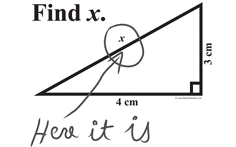
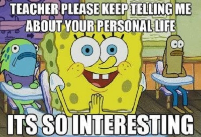
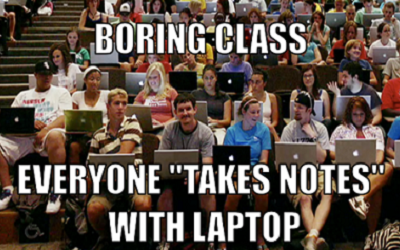
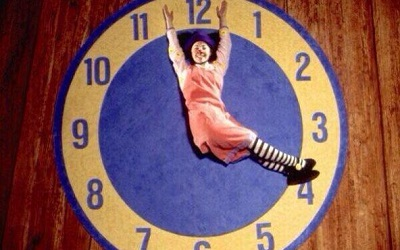
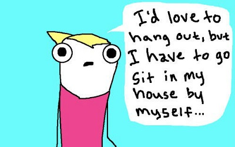

SFA Edition: 8 Study Hacks You Need To Know Before Finals
Written by Piero Pretto, SFA Cum Laude Graduate and HemiNotes Founder
1. Mathway.com

I would have given up multiple girlfriends to hear about this one in high school. It’s a website where you can plug in any math problem imaginable (calculus, trigonometry, etc.) and get the right answer automatically. For free.
2. Audio lecture playlists

Suck at taking notes and/or paying attention in class? Try sitting as close as you can to the professor and recording his lectures on your smartphone or with the Audacity desktop app. I use to do this and re-listen to lectures every morning when I was walking to class or hitting the gym.
3. Only use Time Romans font

If you’re taking notes electronically, use Times New Roman. Because it’s the most widely used font out there, your brain is wired to read it faster.
4. Track your study speed with a stop watch

This has been by far the most rewarding study tip I can give anyone. This usually cuts my study time in half. When taking notes over a chapter, track how many pages you can cover over a 10 minute time frame. Then see if you can cover a few more pages in the next 10 minutes. The reason this hack works so well for me is that it forces me to stay focused. It’s like tracking your lap time around a relay track.
5. Use MindMeister to break down complicated ideas
Studying a complicated equation or problem? Write it out on MindMiester. It’s a free online tool that allows you to visually sketch out ideas and see how everything is interconnected. It’s called mind mapping and it works just like the brain does – connecting one idea to another in a giant web. If you’re a paper guy like me, buy some butcher paper from the Terrific Teachers store on North Street. It’s hard not to feel like Einstein when you’re sketching out equations on 5 by 5 foot paper.
6. Batch like Toyota
Work in small batches. Instead of trying to complete a variety of assignments in one library session, keep them relevant. Complete all writing assignments one day and all research projects the next day. This eliminates prep time. Toyota used this batching approach to revolutionize the manufacturing industry.
7. Get excited about being Anti-Social

Social media sites are the reason you can spend the whole day at the library and get nothing done. Download the Anti-Social app for your PC or Mac to block those sites. This amazing application allows you to choose exactly what sites to block and for how long. It’s $15 but with its 60 Day Money Back Guarantee you can just get a refund after finals.
8. Walk before an exam
According to Andrea Leyden with ExamTime, it’s been proven that exercise can boost your memory and brain power. Research conducted by Dr. Chuck Hillman of the University of Illinois provides evidence that about 20 minutes of exercise before an exam can improve performance.
Good luck this semester.
About HemiNotes:
We help SFA students share and compare class notes online. Learn more »
More articles »